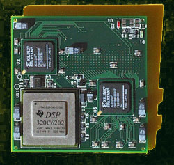
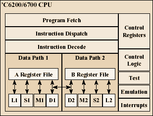

VLIW: Very Long Instruction WordTexas Instruments TMS320C6x |
||||
|

The Texas Instruments TMS320C6x family of microprocessors is one of the largest VLIW success stories to date. Realizing that great potential for the architecture lay in specialized markets, engineers at TI developed the C6x chips for applications in the embedded market. Specifically, they are digital signal processor chips, built around TI's VelociTI VLIW architecture. The mathematics of digital signal processing are well-suited for a VLIW architecture. Signals generated in digital signal processing are complex sums of many individual sine waves. The exact frequency, amplitude, and phases of these waves can be calculated with Fourier Transforms. In digital processing, the Discrete Fourier Transform (DFT) is often utilized because it uses a summation method to calculate Fourier Transforms. The DFT can be calculated quickly using Fast Fourier Transforms (FFT). Without getting too caught up in all the math, the emphasis is that FFT operations require a lot of 'multiply/accumulate' operations. There is a great deal of inherent parallelism in such operations, making them an ideal candidate for a VLIW architecture.

TI's 6CX CPU. (diagram from TI) The C6x chips operate on a 256-bit (very large) instruction, which is a combination of 8 thirty-two bit instructions per cycle, over two data paths. Created with 0.18u CMOS technology, it achieves 2000 MIPS in TI's testing, at speeds up to 1 Gigaflop. The TI chips have met with great success in the embedded, real-time-processing markets. Wideband modems (ADSL), real-time image processing, and wireless telecommunications are a few examples of the applications of this technology. The small form factor of the C6x chip allowed wireless providers to undergo a drastic 75% reduction in the size of their wireless base stations.
|
|
Navigation
|
||
| ||||